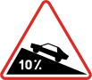
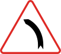
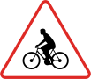
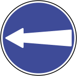
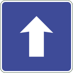

منع وتنظيم
قف — توقف تام
تُلزمك بالتوقف التام والتحقق من حركة الطريق قبل المتابعة.
معرض تعليمي
تصفح الإشارات المتاحة بالاسم والصورة، ثم استخدم البحث أو الفلاتر للعثور على الفئة التي تراجعها.

إشارات واضحة، مراجعة أسرع
يعرض المعرض 15 إشارة من الأصول التعليمية المتاحة. الوصف موجز للتدريب؛ اتبع دائماً الإشارة الميدانية واللوائح السارية.
15 إشارة ظاهرة
تُلزمك بالتوقف التام والتحقق من حركة الطريق قبل المتابعة.

لا تدخل الطريق أو المسار من الاتجاه الذي تواجهه هذه العلامة.

لا تتجاوز الحد المبين، وقد تتطلب الظروف سرعة أقل.

خفف السرعة وثبّت المسار قبل الدخول إلى المنعطف.

اضبط السرعة قبل النزول وحافظ على مسافة أمان.

استعد لتغيرات متتابعة في اتجاه الطريق وتجنب المناورات المفاجئة.

زد الانتباه وخفف السرعة قرب مناطق عبور الأطفال.

اقرأ التقاطع مبكراً وراقب حركة المركبات قبل اتخاذ القرار.

إشارة تحذيرية تدعوك لخفض السرعة ومراجعة الطريق أمامك.

اتبع الاتجاه المبين ونظّم مسارك قبل الوصول إلى التقاطع.

واصل في الاتجاه المفروض ولا تنعطف في موقع الإشارة.

يشير إلى مكان أو خدمة مخصصة للوقوف وفق اللوحات والشروط المرافقة.

لوحة إرشادية تساعدك على فهم الخدمات أو الوجهات المتاحة.

اقرأ الاتجاهات مبكراً واختر المسار الصحيح قبل المفترق.
لوحة إرشادية مرئية تساعد على توجيه السائق في ظروف الرؤية المنخفضة.
لا توجد إشارة مطابقة للبحث أو الفلتر الحالي. جرّب كلمة أخرى أو اعرض كل الفئات.
مصادر الصور: تشمل الأصول صوراً ورسومات من ويكيميديا كومنز وفئات إشارات الطريق الجزائرية. راجع توثيق نسب الأصول لمعرفة المسارات والتراخيص المتاحة. الصور مخصصة للتعليم ولا تعني تأييد المصدر للموقع.